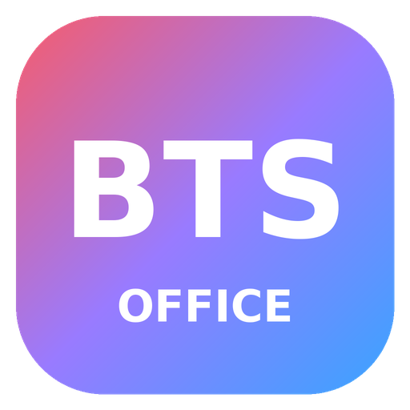

BTS CreativeEdit PDFs, retouch photos, design vector graphics and cut videos — one free, open-source app for Windows.
⬇ Download for WindowsView, comment, sign and organize PDFs.
Layer-based photo editing.
Vector illustration and design.
Multi-track video editing.